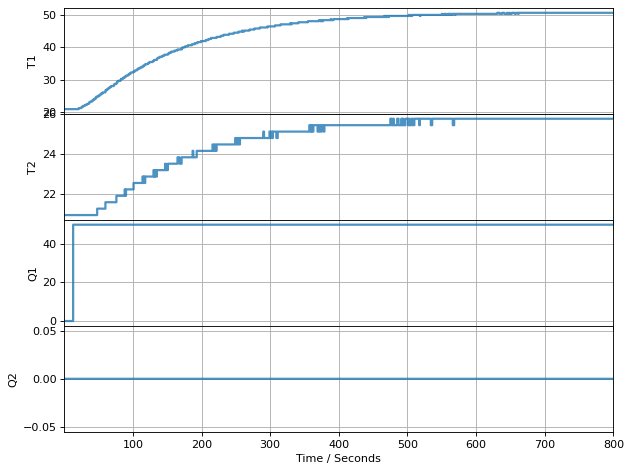
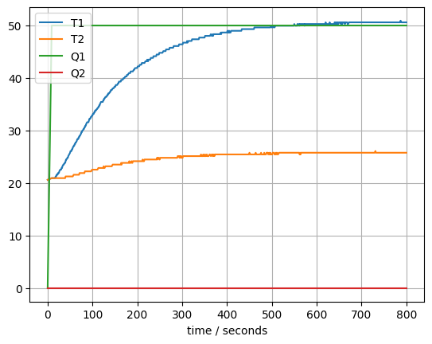
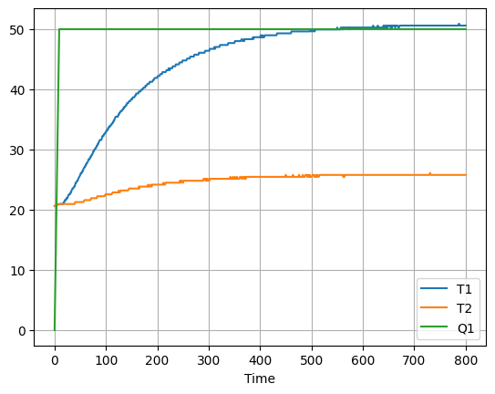

import matplotlib.pyplot as plt
import pandas as pd
from tclab import TCLab, clock, Historian, PlotterStep Testing
Run the next cell if you only want to simulate TCLab
from tclab import setup
TCLab = setup(connected=False, speedup=20)Executing the Step Test
Verify an Initial Steady State
A step test assumes the system is initially at steady state. In the case of the Temperature Control Lab, the initial steady with no power input would be room temperature. It generally takes 10 minutes or more to reach steady state. We’ll do a measurement to confirm the initial temperature.
lab = TCLab()
print(lab.T1, lab.T1)
lab.close()TCLab version 1.0.0
Simulated TCLab
20.949499999999997 20.949499999999997
TCLab Model disconnected successfully.Conduct the Experiment
# experimental parameters
Q1 = 50
tfinal = 800
# perform experiment
with TCLab() as lab:
h = Historian(lab.sources)
p = Plotter(h, tfinal)
lab.Q1(0)
for t in clock(tfinal):
p.update(t)
lab.Q1(Q1)
TCLab Model disconnected successfully.Verify the experimental data
h.columns['Time', 'T1', 'T2', 'Q1', 'Q2']try:
t = h.t
T1 = h.T1
T2 = h.T2
Q1 = h.Q1
Q2 = h.Q2
except:
t, T1, T2, Q1, Q2 = h.fields
plt.plot(t, T1, t, T2, t, Q1, t, Q2)
plt.legend(['T1','T2','Q1','Q2'])
plt.xlabel('time / seconds')
plt.grid()
Convert to a DataFrame
import pandas as pd
df = pd.DataFrame([t, T1, T2, Q1]).T
df.columns = ['Time', 'T1', 'T2', 'Q1']
df = df.set_index('Time')
df.plot(grid=True)
Save DataFrame as a .csv file
df.to_csv('Step_Test_Data.csv')Verify the data file
pd.read_csv('Step_Test_Data.csv').set_index('Time').plot(grid=True)df.head()| T1 | T2 | Q1 | |
|---|---|---|---|
| Time | |||
| 0.00 | 20.6272 | 20.6272 | 0.0 |
| 9.00 | 20.9495 | 20.9495 | 50.0 |
| 10.00 | 20.9495 | 20.9495 | 50.0 |
| 12.01 | 20.9495 | 20.9495 | 50.0 |
| 13.00 | 20.9495 | 20.9495 | 50.0 |
df.tail()| T1 | T2 | Q1 | |
|---|---|---|---|
| Time | |||
| 795.01 | 50.6011 | 25.784 | 50.0 |
| 796.00 | 50.6011 | 25.784 | 50.0 |
| 798.01 | 50.6011 | 25.784 | 50.0 |
| 799.01 | 50.6011 | 25.784 | 50.0 |
| 800.01 | 50.6011 | 25.784 | 50.0 |